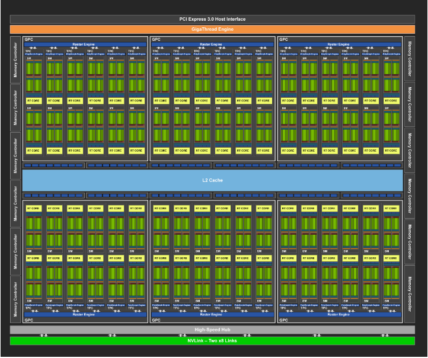
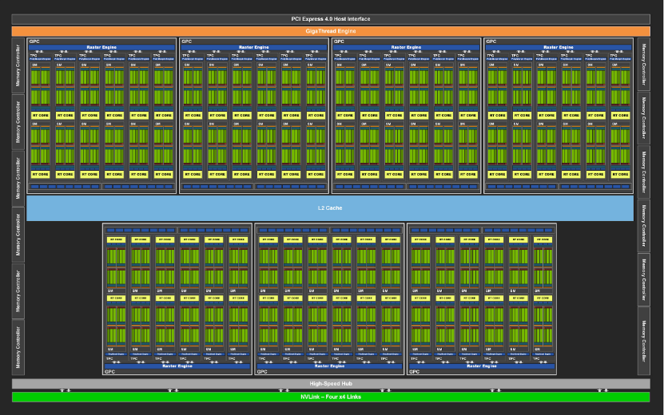

The Turing Architecture
The Turing architecutre introduced three new technologies. The first of these new technologies is the RT core, from which the line got its name. The introduction of the RT core means, for the first time, a single card system is able to preform ray tracing in real time producing physically accurate reflections, refractions, shadows and other lighting effects. Normally to be able to recreate realistic scenes thousands of instructions per ray are required and each scene has an enormous amount of rays to be computed. Each ray must be tested in ever smaller bounding boxes until a triangle is hit. RT cores allow the processors to offload most of the computations so they can continue with other operations while the RT cores deal with lighting effects.
The new streaming multiprocessor delivers a large increase in efficiency with a two times increase in performance per CUDA core. The streaming multiprocessor adds an independent integer datapath, separate from the floating point datapath. Normally an integer calculation would stall any float point instructions, but with the streaming multiprocessor these instructions can be computed in parallel. The streaming multiprocessor has also unified the memory path to unify shared memory and caching. This means a 2x increase in L1 cache capacity for most workloads.
The next big advancement the Turing architecture brought was Turing Tensor Cores. Tensor cores themselves are not new to the RTX line. The previous Nvidia card line, the Volta, also had a version of tensor cores. These cores are specifically designed for tensor or matrix computations which are an integral part of deep learning. The Turing Tensor Core provides better inferencing for machine learning applications by adding INT8 and INT16 precision modes for quantized models.
The full implementation of the Turing architecture in the TU102 GPU includes six graphics processing clusters, thirty-six texture processing clusters and seventy-two streaming multiprocessors. Each graphics processing cluster has a dedicated raster engine and six texture processing clusters each with two streaming multiprocessors. Each multiprocessor has sixty-four CUDA cores, a register file with 256KB and 96KB L1 cache. For memory the Turing architecture uses 12 DDR6 memory controllers, each with a 512KB L2 cache.
The Ampere Architecutre
The second and most recent architecture in the RTX line is the Ampere architecture. Like the Turing architecture, it is comprised of three types of compute resources. These are the programmable CUDA cores, the RT cores for ray tracing and Tensor cores for matrix and tensor computation. Unlike the Turing architecture the Ampere architecture did not bring any new technologies to graphics processing. Instead it greatly improved the new technologies that the Turing architecture brought to the cards.
While Turing brought the streaming multiprocessor that increased floating point instruction throughput by off loading integer instructions onto their own datapath, Ampere further doubled the floating point operations. As most graphics workloads consist of large amounts of floating point operations, Nvidia included FP32 instructions in the integer datapath of the streaming multiprocessor. This resulted in twice the FP32 instruction processing rate leading to 35 FP32 TFLOPS.
Like the floating point throughput, ray tracing saw a two times increase in performance. Improvements to the caching subsystem means RT cores and general compute workload can now run concurrently increasing ray tracing operation times. In addition the RT core itself was improved to better handle motion blur in ray tracing applications. The Turing RT cores had hardware for bounding volume hierarchy and ray/triangle intersection testing. Ampere’s RT cores include this hardware in addition to a new Interpolate triangle position unit. This new unit keeps track of a scene’s triangles position through time. This allows dynamic ray tracing through time rather than the static time ray tracing of the Turing architecture.
The last of the core modules in Nvidia’s GPUs is the Tensor core. The Turing architecture brought INT8 and INT4 computations to the cores and Ampere further broadened the data types accepted. While the Ampere architecture brought a large increase in compute and efficiency to Tensor cores, this increase is mainly due to optimizations. In fact, the streaming multiprocessors of the Ampere cards have fewer Tensor cores than the Turing cards but each core itself is more powerful. These new Tensor cores offer support for matrices with specific sparsity patterns allowing computations to skip zero valued elements. This allows sparse matrix throughput to double while maintaining dense matrix throughput. This optimization is enough to increase matrix operations in the Ampere architecture by 2.7x.
For a full comparison to the Turing architecture, Ampere’s full implementation is as follows. The GA102 GPU contains seven graphics processing clusters with forty-two texture processing clusters each with eighty-four streaming multiprocessors. Each multiprocessor has 128 CUDA cores, a 256KB register, one RT core and a 128KB L1 cache/shared memory.
